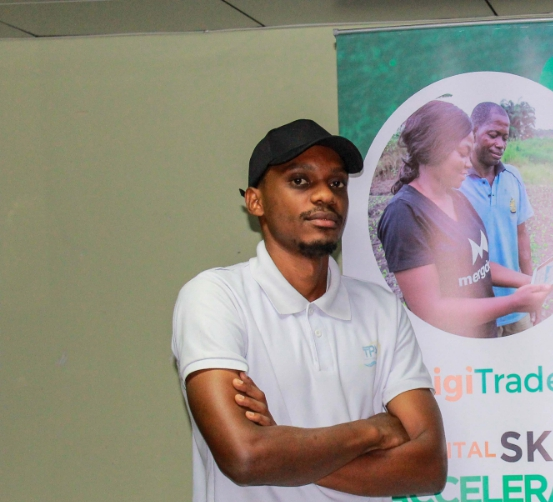
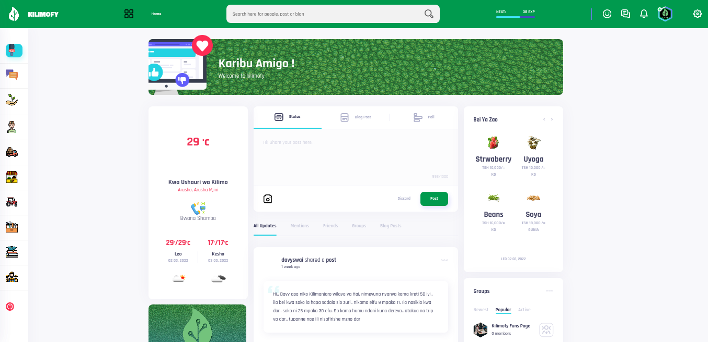
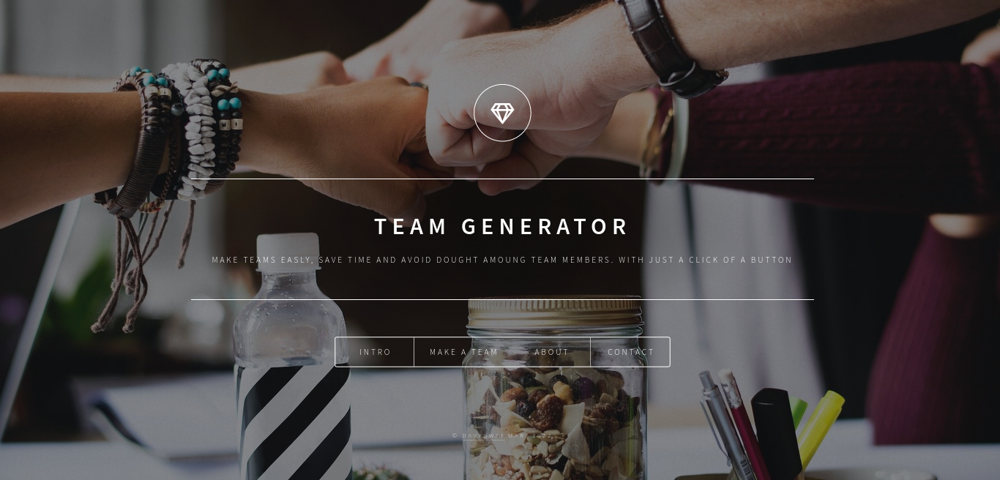
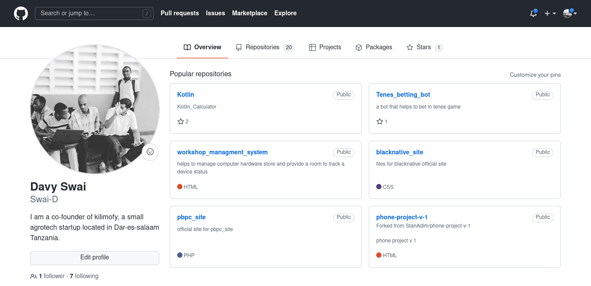

About Me

Hello! My name is Davy and I enjoy creating things that live on the internet. My interest in web development started back in 2014 when I decided to try editing custom Tumblr themes — turns out hacking together a custom reblog button taught me a lot about HTML & CSS!
Fast-forward to today, and I’ve had the privilege of working at an software statup, a huge corporation, and a student-led design studio. My main focus these days is building accessible, inclusive products and digital experiences at Kilimofy for a variety of clients.
Here are a few technologies I’ve been working with recently:
- HTML && CSS
- Javascript
- Laravel (PHP)
- Python
- C programming
- C#
- VB.net
Where I’ve Worked
-
Engineer @ kilimofy
May 2020 - Present
- Write modern, performant, maintainable code for a diverse array of agriculture projects
-
Work with a variety of different languages, platforms, frameworks, and content management systems such as JavaScript, TypeScript, Gatsby, React and WordPress
-
Developer @ Nunuget Softwares
May 2019 - 2020
- Write modern, performant, maintainable code for a diverse array of client and internal projects
-
Worked with a team of three designers to build a marketing website and e-commerce platform for blistabloc, an ambitious startup originating from Northeastern
-
AI Developer @ AgroBot
May 2018 - 2019
- Write modern, performant, maintainable code in machine learning
-
Work with Python Programming in Python AI Chat Bot Tutorial, Python Neural Networks, Flask Web Development
Some Things I’ve Built
-

Kilimofy is the digital platform that unify all agriculture actors within a single platform, i had a wanderfull experience to work with the team, we have built it with HTML & CSS, Javascript in Front-End, and PHP (Laravel) at The Back-End
-

Group Maker is a simple web app that help team leader to create team teams easy, I have created it with passion and love, the idea behind is the team leader upload an csv or excel file format and create a team. This side project i have created it with HTML & CSS, Javascript in Front-End, and PHP (Laravel) at The Back-End
-

In My GitHub account, i have created numbers of project from simple to more complex ones, the language which 'am comfortable working with are HTML & CSS, Javascript in Front-End, and PHP (Laravel) at The Back-End, Python, C Programming, C#, VB.net
you can passby and clone some project and start playing with
Contact